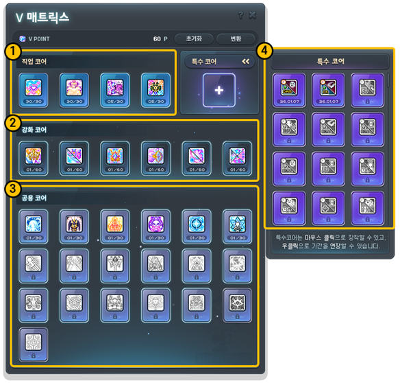
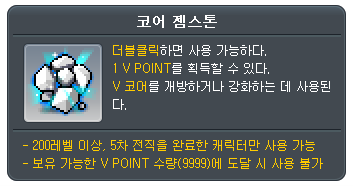
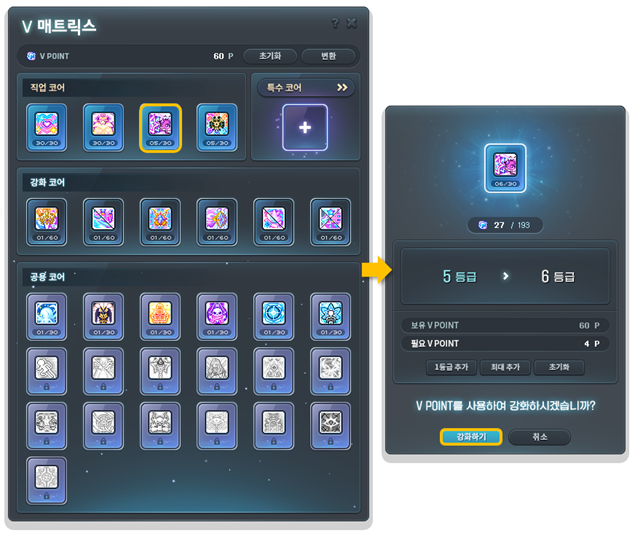
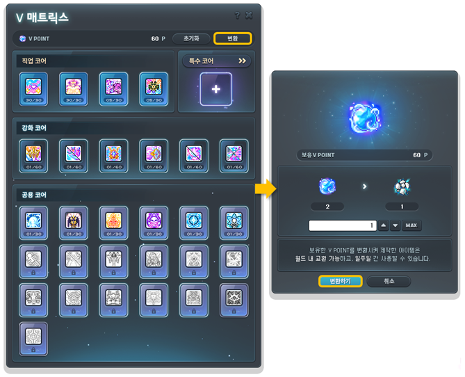

메이플스토리 강화코어 V매트릭스 활성화 강화 순서, V POINT 얻는 법부터 초기화까지
5차 전직을 마치고 V 매트릭스 창을 처음 열면 칸이 한가득이라, 메이플스토리 강화코어가 대체 뭔지, 어떤 순서로 눌러야 하는지 막막하잖아요. 게다가 6차 HEXA 매트릭스에도 같은 이름의 '강화 코어'가 있어서 더 헷갈리고요. 그래서 오늘은 V 매트릭스의 강화 코어를 여는 곳부터 재료, 활성화와 강화 순서, 초기화까지 한 번에 묶어 봤어요. 내용은 메이플스토리 공식 가이드 기준이고, 기준일은 2026년 10월 13일입니다.
메이플스토리 V매트릭스, 5차 전직하면 어디서 여나요
V 매트릭스는 5차 전직을 완료한 캐릭터가 스킬창(기본 단축키 K)의 5차 스킬 탭에서 여는 시스템이에요.
V 코어를 한곳에서 관리하는 창이라서, 5차 전직 전에는 이용할 수가 없어요. 열어 보면 맨 위에 보유한 V POINT가 표시되고 옆에 [초기화]와 [변환] 버튼이 붙어 있는데요, 처음에는 대부분 코어 칸이 잠겨 있는 상태로 보여요.
메이플스토리 강화코어는 어떤 스킬을 올려 주는 코어인가요
강화 코어는 캐릭터의 1차~4차 스킬과 하이퍼 액티브 스킬을 강화하는 코어예요.
V 코어는 네 종류인데, 화면에서는 이런 자리에 놓여 있어요.
- ① 직업 코어 — 화면 맨 위 구역이에요
- ② 강화 코어 — 그 바로 아래 구역으로, 1~4차 스킬과 하이퍼 액티브 스킬을 맡아요
- ③ 공용 코어 — 그 아래 가장 넓은 구역이에요
- ④ 특수 코어 — 오른쪽 패널에 따로 있고, 장착한 뒤 7일 동안 쓰다가 우클릭으로 기간을 연장해요

②번 구역이 강화 코어예요. 공식 예시 화면 기준이라 칸 수는 내 화면과 다를 수 있어요
이미지 출처: 메이플스토리 공식 가이드 [스킬] 5차 스킬
예시 화면의 강화 코어 구역에는 코어가 6칸 들어 있고, 칸마다 '01/60'처럼 적혀 있어요. 6칸이 각각 어느 스킬인지는 캐릭터마다 달라서, 내 매트릭스 화면에서 보시는 게 가장 정확하답니다.
강화코어 재료 V POINT는 어떻게 얻나요
V POINT는 코어 젬스톤 아이템을 사용하면 얻고, 코어 젬스톤 1개당 V POINT 1이 들어와요.
코어 젬스톤은 이런 곳에서 구할 수 있어요.
- 아케인리버 및 일부 그란디스 지역 필드 사냥
- 콘텐츠 완료 보상
- 이벤트 보상
- 용사님들 간의 교환 또는 메이플 옥션 구매
이렇게 모은 V POINT를 V 매트릭스 상단에서 코어 활성화와 강화에 나눠 써요. 사용은 아이템을 더블클릭하면 되고, 툴팁에는 200레벨 이상이면서 5차 전직을 마친 캐릭터만 쓸 수 있다고 적혀 있어요. 보유 가능한 V POINT 수량이 9999에 닿으면 더는 사용할 수 없다는 문구도 있어서, 젬스톤을 한꺼번에 많이 모아 두셨다면 이 상한에 걸릴 수 있거든요.

코어 젬스톤 툴팁이에요, 1 V POINT를 얻을 수 있다고 적혀 있어요
이미지 출처: 메이플스토리 공식 가이드 [스킬] 5차 스킬
강화코어 활성화가 먼저, 강화는 그다음이에요
강화 코어는 V POINT로 활성화를 먼저 해야 강화할 수 있어서, 순서는 활성화 → 강화 → 효과 확인이에요.
누르는 방법은 생각보다 어렵지 않네요. 활성화든 강화든 같은 흐름이에요.
- V 매트릭스에서 활성화하거나 강화하려는 코어를 클릭해요
- 뜨는 창에서 보유 V POINT와 필요 V POINT, 올라갈 등급을 확인해요. 올릴 등급은 [1등급 추가]나 [최대 추가] 버튼으로 정하는 화면이에요
- [강화하기]를 누르면 끝이에요. 마음이 바뀌면 [취소]를 누르면 되고요

직업 코어를 눌러 본 예시 화면이에요. 강화 코어도 같은 방식으로 누르지만, 이 화면 속 필요 V POINT 숫자는 직업 코어 기준 값이에요
이미지 출처: 메이플스토리 공식 가이드 [스킬] 5차 스킬
강화가 쌓일수록 각 스킬의 최종 데미지가 오르고 재사용 대기시간이 줄어드는 식으로 효과가 붙어요. 레벨별 필요 포인트는 강화 창에 뜨는 필요 V POINT를 보면서 올리시면 돼요.
그럼 6칸 중 어디부터 올릴지가 궁금하실 텐데요, 정해진 정답 순서는 없죠. 저라면 사냥이든 보스든 가장 자주 쓰는 스킬에 해당하는 코어부터 활성화해 두고, V POINT가 모이는 만큼 다음 칸으로 넘어가는 쪽으로 판단할 것 같아요.
강화코어 V POINT 초기화와 변환, 되돌릴 수 있나요
활성화와 강화에 쓴 V POINT는 천만 메소를 내고 [초기화]로 되돌릴 수 있지만, 직업 코어와 특수 코어에 쓴 포인트는 초기화되지 않아요.
[초기화] 버튼은 V 매트릭스 상단에 있어요. 강화 코어와 공용 코어에 쓴 포인트는 돌려받는 구조라서 순서를 잘못 잡았다 싶을 때 다시 배분할 수 있지만, 직업 코어 쪽에 쓴 포인트는 돌아오지 않으니 그쪽에 쓸 때는 한 번 더 생각해 보시길 권합니다.
남는 포인트는 [변환] 버튼으로 처리해요. 쓰지 않는 V POINT를 나의 캐릭터 간 이동만 가능한 코어 젬스톤으로 바꿔 주는 기능이라, 이 캐릭터엔 포인트가 남고 저 캐릭터는 모자랄 때 옮겨 쓸 수 있어요. 정리하면 [초기화]는 이미 쓴 포인트를 돌려받는 버튼이고 [변환]은 아직 쓰지 않은 포인트를 바꾸는 버튼이라서, 쓰는 때가 서로 다르답니다.

[변환]을 누르면 오른쪽 같은 변환 창이 떠요
이미지 출처: 메이플스토리 공식 가이드 [스킬] 5차 스킬
6차 HEXA 매트릭스의 강화 코어는 뭐가 다른가요
6차 HEXA 매트릭스의 강화 코어는 5차 스킬을 강화하는 코어라서, 1~4차 스킬을 올리는 V 매트릭스의 강화 코어와는 다른 시스템이에요.
하이퍼 액티브 스킬5차 전직 후 열리는 쪽이에요
| 구분 | V 매트릭스 강화 코어 | HEXA 매트릭스 강화 코어 |
|---|---|---|
| 여는 곳 | K > 5차 스킬 탭 | K > 6차 스킬 탭 |
| 재료 | V POINT(코어 젬스톤) | 솔 에르다, 솔 에르다 조각 |
| 활성화 조건 | V POINT를 써서 코어 활성화 | 특정 5차 스킬이 일정 레벨 이상으로 강화됐을 때 |
이 글에서 다룬 V POINT와 코어 젬스톤은 6차 쪽 재료가 아니에요. 5차 스킬을 올리고 싶다면 V 매트릭스가 아니라 HEXA 매트릭스를 열어야 합니다. 출발점도 달라서, V 매트릭스는 V POINT로 코어를 활성화하는 데서 시작하지만 HEXA 쪽 강화 코어는 대상인 5차 스킬이 일정 레벨까지 올라와 있어야 활성화할 수 있어요.
자주 묻는 질문
Q. HEXA 매트릭스에는 어떤 코어가 있나요?
스킬 코어, 마스터리 코어, 강화 코어, 공용 코어 네 종류가 있어요. 4차 이하 스킬을 대체하거나 강화하는 건 마스터리 코어 몫으로 안내돼 있답니다.
Q. 변환한 아이템은 얼마나 쓸 수 있나요?
변환 창 예시 화면에는 비율 아이콘이 2 대 1로 표시돼 있고, 변환해서 만든 아이템은 일주일간 사용할 수 있다는 문구가 함께 떠요.
메이플스토리 강화코어 정리
칸 순서에 정답은 없으니 평소 가장 자주 쓰는 스킬 쪽부터 잡으시면 부담이 덜합니다. 5차 전직 후 V POINT가 모이는 대로 하나씩 열어 보시길 추천드려요.
✔ 메이플스토리 같이 보기 좋은 내용
· 메이플스토리 퍼스널 버닝 켜는 법, 레벨대별 사냥터 4단계 총정리
· 메이플스토리 캐치! 티니핑 콜라보 판매기간·아이템 총정리
· 메이플스토리 홍대 방탈출카페 '이스케이프' 오픈 일정·테마·예약 총정리
참고한 곳
· 메이플스토리 공식 가이드 — [스킬] 5차 스킬
· 메이플스토리 공식 가이드 — [스킬] 6차 스킬